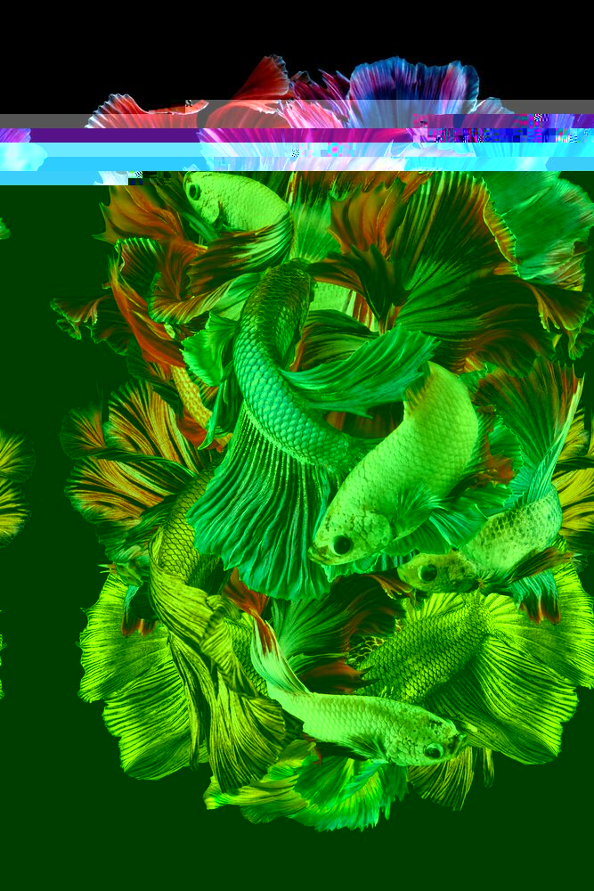
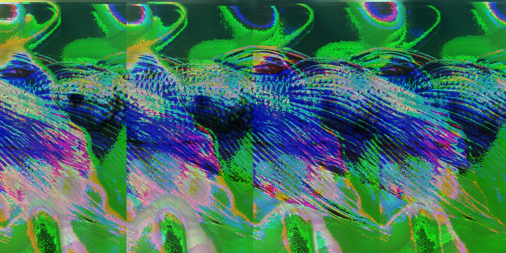
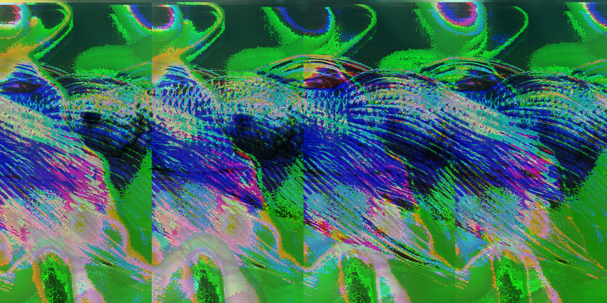

Glitch Pictures
These are my images for the glitch assignment
Betta Fish Negligence
Images are edited with Notepad++ and Audacity.




I wanted to create glitch edits of betta fish. I decided to glitch them because it is my representation of spreading awareness about how they are one of the most neglected fish in fish keeping. Bettas are beautiful fish yet many fail to take care of them properly. The same negligence applies to goldfish. Even though the effects of the first glitch are simple, it is, in my opinion, a good representation in which it shows how bettas appear beautiful at first, but overtime begins to deteriorate as they don't receive care.